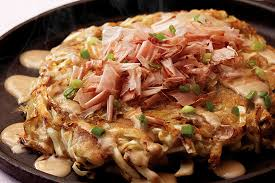

Japan Food Menu
오꼬노미야끼

재료 : 부침가루 1컵, 물 1컵, 양배추 1컵, 숙주 35g, 양파 1/5개, 새우 5마리,
달걀 1개, 데리야끼소스 적당량, 마요네즈 적당량, 가쓰오부시 10g
①양배추, 양파, 새우, 숙주를 손질 후 적당한 크기로 썰어주세요.
②부침가루와 물을 1:1비율로 넣고 달걀을 넣고 섞어주세요.
(반죽의 농도는 재료 양에 따라조절해주세요.
반죽은 주르륵 흐를정도가 적당하답니다.)
③손질 후 채썬 재료들을 넣고 잘 섞어주세요.
(다양한 채소들을을 많이 넣을수록 맛있어요)
④팬에 기름을 두르고 반죽을 올려 노릇노릇하게 구워주세요.
⑤데리야끼 소스를 먼저 바르고 마요네즈를 뿌려주세요.
⑥먹기좋게 칼로 자른후 가쓰오부시 올리고 마무리.
Mascot

Social Network Service